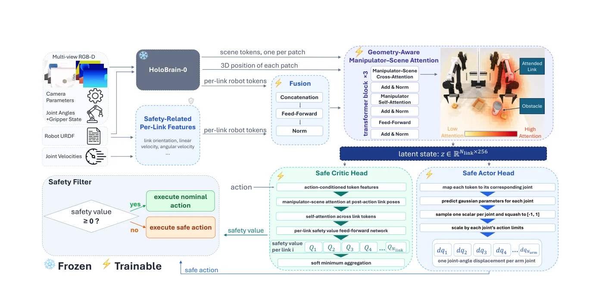

Cross-embodiment learning has shown that a single model, such as a vision-language-action (VLA) model, can learn state representations and manipulation skills that can be applied across heterogeneous robots to accomplish various tasks. We hypothesize that the same holds for safety enforcement. The reasoning required to satisfy a safety constraint, such as detecting an obstacle, recognizing that it should be avoided, and selecting a safe abstract action, is largely shared across robots. What differs across embodiments is how the abstract safe action is realized: morphology, kinematics, and dynamics determine which actions are safe and feasible. Consequently, the same action can be safe for one robot and unsafe for another. This is especially important for generalist manipulation policies that operate in a common end-effector action space without explicitly capturing how safety depends on the robot’s morphology and kinematics. We propose embodiment-conditioned safety filtering, in which a Hamilton–Jacobi reachability-based value function and its corresponding safety-maximizing policy are shared across robots. Using a morphology-aware latent representation of the robot and its environment, we perform Hamilton–Jacobi reachability analysis directly in latent space so that the learned safety concepts can generalize across embodiments while remaining explicitly conditioned on each robot’s morphology and kinematics. We evaluate our approach across five bimanual robot embodiments and five manipulation tasks with whole-body collision-avoidance constraints. Our results show that a single policy, jointly trained across five manipulation tasks and four embodiments, exhibits zero-shot generalization to a held-out embodiment, reducing the nominal policy’s collision rate. They also show that training using more embodiments improves generalization.
Takeaways
The reasoning behind detecting an obstacle and deciding to avoid it is shared across embodiments; the safe whole-body motion executing the safe action is not
The safety reasoning is general across robots. The collision-free action that realizes it depends on each robot’s morphology, kinematics, and degrees of freedom.
One Hamilton–Jacobi critic and safe policy run in a morphology-aware latent space
CrossSafe freezes HoloBrain-0, adds safety-related per-link features, and uses geometry-aware manipulator–scene attention so a shared critic and safe policy can run on robots with different DoFs.
CrossSafe generalizes to embodiments with different degrees of freedom
In RoboTwin 2.0 leave-one-embodiment-out evaluation, the same filter lowers the nominal planner’s collision rate on the held-out robot. When trained only on 6-DoF-per-arm embodiments, it still transfers to a 7-DoF Franka-Panda.
Training on more embodiments enables better generalization to unseen embodiments
Generalist filters trained on four embodiments outperform specialists trained on one, with lower out-of-distribution collision rate and contact force.
Experiment videos
Without vs. with CrossSafe
Without CrossSafe — the planner drives into the obstacle.With CrossSafe — the filtered action stays clear of the obstacle.
One learned filter on five embodiments
The same safety filter is used on Piper, Franka-Panda, ARX-X5, UR5-WSG, and Aloha-AgileX, including the embodiment held out of safety-filter training.
The filter is trained only on 6-DoF-per-arm embodiments. At test time it outputs an extra joint displacement per arm for Franka-Panda.
Unseen Franka-Panda without CrossSafe.Unseen Franka-Panda with CrossSafe.
Method
A frozen HoloBrain-0 encoder produces scene tokens and per-link robot tokens from multi-view RGB-D, camera parameters, joint state, and the robot URDF.
CrossSafe augments each link with safety-related features that HoloBrain-0 does not encode, including world-frame linear and angular velocities and normalized kinematic depth, then fuses those features into the link tokens.
Geometry-aware manipulator–scene attention lets each link token attend to scene patches with a bias from 3D distance and direction.
The shared Hamilton–Jacobi critic scores a candidate joint action; the shared safe actor outputs per-joint angle displacements scaled by each joint’s limits.
At 25 Hz the filter executes the nominal action if Q ≥ 0 and the safe action otherwise.

Figure 1 from the paper.
Frozen HoloBrain-0 produces scene and per-link tokens. Trainable fusion, geometry-aware attention, and HJ heads yield a safety value and feasible whole-body actions for robots with different degrees of freedom.
Citation
@misc{tabbara2026crosssafe,
title={CrossSafe: Towards Cross-Embodiment Latent Safety Filters},
author={Ihab Tabbara and Yuxuan Yang and Hussein Sibai},
year={2026},
eprint={2609.28984},
archivePrefix={arXiv},
primaryClass={cs.RO},
url={https://arxiv.org/abs/2609.28984},
}